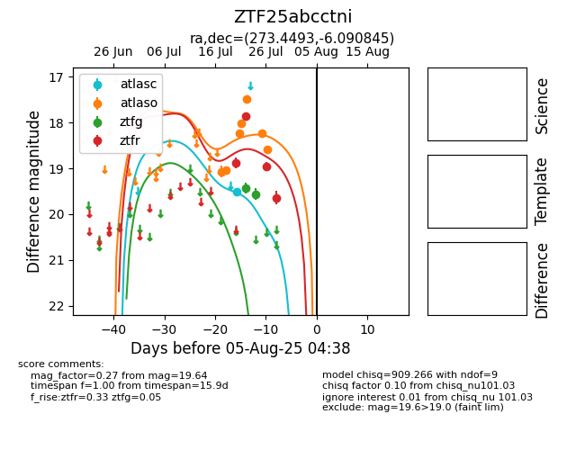

Target ZTF25abcctni at 2025-08-05 04:38, see:
FINK: fink-portal.org/ZTF25abcctni
Lasair: lasair-ztf.lsst.ac.uk/objects/ZTF25abcctni
ALeRCE: alerce.online/object/ZTF25abcctni
alt names
ZTF25abcctni (ztf,fink)
coordinates:
equatorial (ra, dec) = (273.4493,-6.09084)
galactic (l, b) = (23.1817,+5.52678)
photometry
last atlasc=19.52, atlaso=18.58, ztfg=19.56, ztfr=19.64
1 atlasc, 7 atlaso, 2 ztfg, 4 ztfr detections
